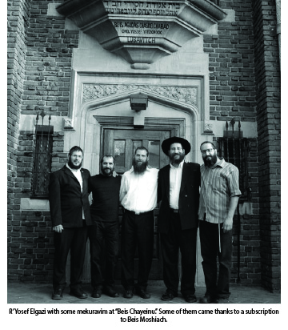

The Quiet Revolution
Many shluchim regularly buy subscriptions to Beis Moshiach magazine for their mekuravim and mushpaim. * How does Beis Moshiach help them? * About the tremendous influence of this magazine.
When I began working on this article, I was reminded of the Rebbe’s sicha in which he told of two bachurim who went on Merkos Shlichus and tried to convince the Jews they met to buy a subscription for their children to Talks and Tales. They spoke with some people but were unsuccessful in getting anyone to subscribe. They were very disappointed and the Rebbe referred to this. This is a quote from the sicha of Mattos-Massei 5712:
“When a child comes home and says he saw a bachur with a beard, selling Talks and Tales and the bachur wants him to subscribe but he doesn’t, when he relates this, then his father or mother will be reminded of their parents, and in one moment and in one instant etc.”
Why was I reminded of this sicha? It’s very simple. When you publish something, it’s hard to know what influence your newspaper/brochure/book etc. has. The people involved in this holy work are more aware of the difficulties and effort it takes and are less aware of the results. However, the reality is that whoever is holding a copy of Beis Moshiach can testify to an inspiring farbrengen, a Chassidishe thought, an article about some activity, a story, something that pulled him into the world of Chassidic content and injected him with chayus in his personal avodas ha’shlichus.
THE MAGAZINE AS A TOOL
If there are still those who are looking for proof of the enormous influence of Beis Moshiach, they should know that there are many shluchim who regularly buy subscriptions to the magazine for their mekuravim and mushpa’im. We heard enthusiastic feedback from numerous shluchim, young and old, such as: R’ Yisroel Halperin, shliach in Hertzliya; R’ Chaim Yosef Ginsberg, shliach in Ramat Aviv; R’ Yosef Elgazi, shliach in Kiryat HaYovel, Yerushalayim; R’ Menachem Mendel Lerner, shliach in Binyamina, and more.
R’ Chaviv Mizrachi (see issue 901 for an article about him), of the Chabad community in Kiryat HaYovel, who was subscribed through the shliach R’ Elgazi, said, “Soon after I became involved with Chabad, R’ Yossi got me a subscription. What grabbed me at the time was the Rebbe’s picture on the cover. Such perfect harmony. Just seeing the face of the king gives you the strength to carry on. The pictures of the Rebbe broadcast something that only a picture is capable of. Sometimes you can try all sorts of methods to convince someone of something and in the end a picture is what does the persuasion.”
R’ Chaviv searches for the words to explain how vital Beis Moshiach is to the Chabad community as well as to those who don’t yet know they are Chabadnikim. “Beis Moshiach is not just a magazine with Chassidic content; it fills an enormous vacuum. When, after a week of work, without any spare time, you are plotzing and looking to learn something short and to the point, Beis Moshiach provides you with plenty of food for thought. There are numerous points that you can take with you into your daily life which will enable you to live with the Rebbe and his horaos.”
R’ Menachem Mendel Lerner, shliach in Binyamina, chose to discuss the change that he personally experienced ever since he signed up for a subscription to Beis Moshiach: “I am a subscriber for a few years now and we are working on signing up mekuravim. But for a year and a half to two years from when I went on shlichus, for some reason I was still not a subscriber. From the moment I subscribed, I regretted that I didn’t do so sooner.”
“When on shlichus, there are days that you pine for a juicy Chassidishe farbrengen, but you don’t have anyone to sit down with. Then comes Beis Moshiach, and you sit down to farbreng with R’ Levi Yitzchok Ginsberg, for example. It’s a shot in the arm for the entire week!
“I always take ideas from R’ Ginsberg’s column about how to connect current events with Moshiach and Geula. You can’t always repeat it in the same words that appear in the magazine, but when you get into the spirit of things it’s easier to find the right words to convey the message.
“As I mentioned, I try to give my mekuravim subscriptions to Beis Moshiach, because I know of its impact. Still, I would like it if there was another edition of Beis Moshiach for mekuravim, if not every week, then at least once a month.”
LET US DO THE WORK FOR YOU
We spoke with the shliach in Kiryat HaYovel, R’ Yosef Elgazi, and asked him what impact Beis Moshiach has on his mekuravim. He said:
“When a shliach is mekarev someone to the Rebbe and Chassidus, especially when he’s a ‘fresh’ mekurav to whom everything is new, he has to immediately start thinking about what’s going on in the mekurav’s home, with his family etc. When the husband is niskarev and starts learning Chassidus and the Rebbe’s sichos and hears about miracles of the Rebbe and his prophecy about the Geula, he begins changing customs, learning Chitas and Rambam, and writing to the Rebbe. Of course, he goes home with a mindset that is more Chassidic oriented.
“A problem can arise in that the wife is not yet involved because she doesn’t understand what it’s all about and who this ‘Rebbe’ is. This is especially so when she does not attend programs for women at the Chabad house because they don’t interest her.
“The only way to bridge the gap and to influence the woman too is through something that comes into the house. Beis Moshiach fits the bill. After all, it’s a magazine full of interesting reading material which doesn’t obligate anyone. There is nobody trying to coerce you. So even if at first, the woman is not that interested, over time, as she reads an article here and an article there, she gets involved. The children look at it too.
“I’ve done this already with a number of families and the magazine does the work for me.”
When I asked him whether he has any specific examples of this, he said:
“I took a group of mekuravim to the Kinus HaShluchim. Among them was someone who was niskarev at our Chabad house. His wife could not attend the women’s farbrengens at the Chabad house to see what it’s all about, for herself. So I made them a subscription.
“Today, when he goes home, he can’t read Beis Moshiach because she’s reading it! She reads the entire issue, from the beginning till the end. As a result, she has allowed him to go to the Rebbe three times already.
“Another example – a certain talmid chacham in the neighborhood came into the Chabad house and set up a chavrusa with one of the activists to learn the D’var Malchus. He was inspired by these amazing sichos of the Rebbe and began doing mivtzaim very enthusiastically, even though when it comes to Halacha he does what his family has always done. But when it comes to other practices, he became a Chassid. His brother-in-law is a Rosh Kollel in the neighborhood. When they sat down to learn together, the brother-in-law would mention what the Rebbe says on the subject, in Gemara, Halacha, Kabbala, etc.
“It opened the eyes of the Rosh Kollel who was amazed by the depth of what the Rebbe says. He immediately grasped that this is something extraordinary and today he has an entire library of Chabad s’farim. On every subject he checks to see what the Rebbe has to say about it. He gives Tanya classes to a group of young people who learn by him and afterward, they gave out CD’s with the shiurim. It’s really unbelievable!
“The Rosh Kollel’s brother-in-law, who started it all, discovered that his wife was not so thrilled by all this. He ended up subscribing to Beis Moshiach and his wife has begun to come around. Today, she is about to buy a sheitel.
“A fellow in Australia began getting involved some time before he got married. His bride wasn’t too excited by this. Today, their home is a Chassidishe home. A significant share in influencing the wife can be credited to Beis Moshiach.
“Boruch Hashem, we have been mekarev many people who are already wearing a sirtuk. Each one had a subscription to Beis Moshiach which made a huge difference, especially at the beginning.”
RAISING THE FLAG OF EMUNA IN WHAT THE REBBE SAID
How many subscriptions does the Chabad house have?
“About fifteen. Every mekurav who starts to ‘get the point,’ immediately gets a subscription to Beis Moshiach. This is the only way to ensure that the influence of the Chabad house will continue at home and fill the space between shiurim and farbrengens at the Chabad house. Beis Moshiach does the work and connects the mekurav’s home to the Rebbe too.
“The subscribers among the mekuravim often bring their copies of Beis Moshiach later on to the Chabad house and other people take them home.”
What about the affect the magazine has on the shluchim?
“Of course, the shluchim themselves also get a lot from the magazine. Every shliach or shlucha often gives shiurim and farbrengs, but they themselves also need inspiration and a farbrengen isn’t always readily available. Picking up Beis Moshiach is a practical alternative. The warmth and enthusiasm about the Rebbe’s inyanim, the articles and features, it’s all literally life-giving.
“There can be stressful times and nobody to talk to and then you notice an answer from the Rebbe, a sicha, or a farbrengen in the magazine that you can relate to in your situation. It revives you.
“My wife always tells me that the editors of Beis Moshiach will be the first to greet Moshiach, because they are the ones who raised the flag of belief in his holy words and prophecy.”
OUR PERSONAL SHLIACH 
We met Shai, a bearded mekurav of R’ Elgazi, and heard from him directly about the impact Beis Moshiach had on him:
“I started getting involved when, in the shul I daven in, they gave out the pamphlet Chabad Sheli that is published by the neighborhood Chabad house. I enjoyed the stories about the Rebbe and the rest of the material and when I saw an ad for a Tuesday Kollel at the Chabad house, I decided to check it out.
“At first, I heard that the avodas ha’birurim is over and we just need to open our eyes. I thought this was too advanced for me. But then I decided to stay, figuring I had nothing to lose. One shiur led to another and I began to catch on. I was especially taken by a shiur given by R’ Zalman Notik in maamarei Chassidus. As time went by, I became more involved.
“At a certain point, a group formed to travel to the Rebbe and R’ Yossi suggested that I join. On the way back home, he told me about Beis Moshiach and suggested I subscribe. I was happy to do so and since then, the magazine comes every Thursday. When I had gotten more ‘into’ things and began to change, my wife lagged a bit behind. The magazine ended up doing all the work.
“The stories about the Rebbe, how he takes care of everything, the articles about Chassidim from earlier times and their mesirus nefesh, the Chassidishe farbrengens, they made all the difference. To us, Beis Moshiach is another shliach of the Rebbe that goes along with us, hand in hand, and supports us in our involvement with the Rebbe and Chassidus.
“Four or five years ago, if someone would have told me that I would go to the Rebbe, I would have said he was dreaming. And now, this is the third trip I am making.”
Brook. "The Quiet Revolution." Beis Moshiach, no. 905 (December 5, 2013).